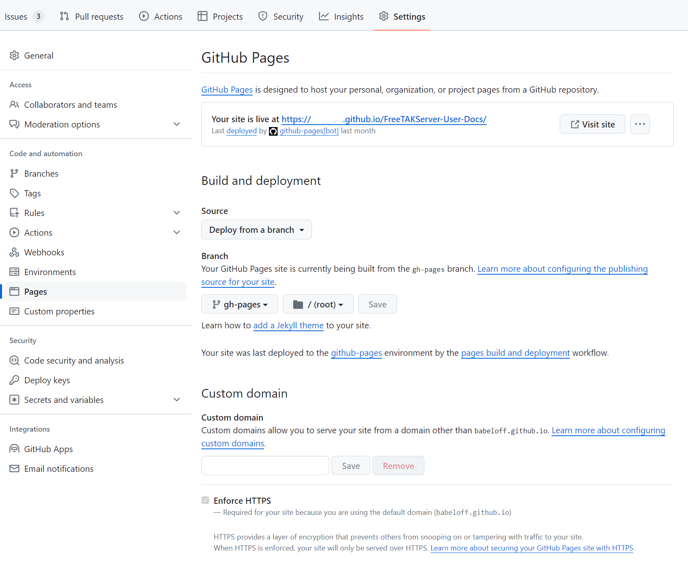

Write Documentation
This project houses the FreeTakServer (FTS) documentation. It is written in Markdown and mkdirs.
Procedure
Fork the Main Repository
You will need a github account.
Fork https://github.com/FreeTAKTeam/FreeTAKServer-User-Docs into your own account. Clone your forked repository onto your development environment.
It will probably be useful to have two remotes, one (upstream) for merging in upstream commits, and one (origin) for your forked repository.
Discuss on the FreeTAK Forum
FTS provides a Discord server where we can provide a consistent experience, free from kindergarten dramas and with a lot of sense of humor (keep in mind our tagline – "The parrot's not dead! It’s just resting"). You can join the FTS Discord Server here: https://discord.gg/m8cBzQM2te. While Discord is cool for live interaction, it can be very inconsistent. The forum is organized thematically, where it’s easier to stay on topic. This will include a knowledge library of problems and solutions. While other places may exist were enthusiast discuss our software, the new platform is what we, the developers, will actively support.
Make Changes
See Documentation Patterns below.
Verify Processing
Warning
The following description is only partially correct.
GitHub Pages
GitHub provides the ability to publish generated documentation. FTS makes use of this capability.
You should generate the documentation with your changes to make sure nothing was inadvertently broken.
The following shows you an example of how to set up gh-pages for your project repository.

The important thing here is to select [GitHub Actions].
GitHub Action
The documentation is built via GitHub actions.
Here is the .github/workflows/main.yml action:
# https://squidfunk.github.io/mkdocs-material/publishing-your-site/#github-pages
name: Build and Publish User Docs
on:
push:
branches:
- main
- mkdocs
permissions:
contents: write
jobs:
deploy:
runs-on: ubuntu-latest
steps:
- uses: actions/checkout@v4
- name: Configure Git Credentials
run: |
git config user.name github-actions[bot]
git config user.email 41898282+github-actions[bot]@users.noreply.github.com
- uses: actions/setup-python@v5
with:
python-version: 3.x
- run: echo "cache_id=$(date --utc '+%V')" >> $GITHUB_ENV
- uses: actions/cache@v4
# https://github.com/actions/cache
with:
key: mkdocs-material-${{ env.cache_id }}
path: .cache
restore-keys: |
mkdocs-material-
- run: >-
pip install mkdocs-material mkdocs-awesome-pages-plugin
mkdocs-section-index mkdocs-toc-sidebar-plugin mike
markdown-include mkdocs-pdf-export-plugin
mkdocs-mermaid2-plugin
httplib2
mkdocs_build_plantuml_plugin
mkdocs-exclude mkdocs-minify-plugin mkdocs-versioning
# https://www.mkdocs.org/user-guide/cli/#mkdocs-gh-deploy
- run: mkdocs gh-deploy --force
on push branches main : The event and branch which triggers this workflow
jobs deploy steps run : Install dependencies and build the target
If the GitHub Page does not show up after a few minutes,
go to the settings of your repository and ensure that the publishing source branch for your GitHub Page is set to gh-pages.
Make a Pull Request (PR)
Once you are satisfied with your changes make a GitHub pull request.
Announce your PR on the discord Development / doc-dev channel.
(You have been discussing your changes there, right?)
Any changes you make to the branch associated with the PR will be included until it is approved and merged.
Working Locally
While you will ultimately verify your work as outlined above, it will probably be useful to work locally.
Dependencies
Here are the packages it uses:
These packages are available for conda.
mamba env create -y -f docs/docs/HowToHelp/fts-doc-env.yml
name: fts-doc
channels:
- conda-forge
dependencies:
- python=3.11
- mkdocs
- mkdocs-material
- mkdocs-material-extensions
- mike
# - mkdocs-jupyter
- markdown-include
- pip
- pip:
- mkdocs-awesome-pages-plugin
- mkdocs-section-index
- mkdocs-pdf-export-plugin
- mkdocs-mermaid2-plugin
- mkdocs_puml
Preview Document
Start a service to view the resulting document.
mkdocs serve
Documentation Patterns
Mkdocs and Material Theme
The markdown files are coordinated and supplemented by mkdocs and its plugins.
Some of the more important features of those plugins are presented here.
mkdocs is configured via the mkdocs.yml file.
Awesome Pages
Each document directory should contain a .pages.
These .pages distribute the nav: element across the document
rather than collecting them in the mkdocs.yml file.
This implies that mkdocs.yml should not contain a nav: element.
Markdown Includes
This file contains a typical example.
The fts-doc-env.yml file mentioned above is itself included using this facility.
i.e.
```yml
{!HowToHelp/fts-doc-env.yml!}
```
Mike (multi-version support)
The fts_user/docs/versions.json is used to define the versions.
TODO: Explain how this is to be used.
Mermaid
For simple diagrams we use Mermaid.
https://mermaid.js.org/
PlantUML
There are some cases where Mermaid is not sufficient such as making Network Deployment Diagrams.
When that happens we use PlantUML.
https://github.com/plantuml-stdlib/C4-PlantUML/blob/master/README.md
Writing Good Markdown
- https://docs.github.com/en/get-started/writing-on-github/getting-started-with-writing-and-formatting-on-github/basic-writing-and-formatting-syntax
- https://github.com/ikatyang/emoji-cheat-sheet/blob/master/README.md
Ventilated Prose
Prefer ventilated prose in composition.
- https://writetheasciidocs.netlify.app/ventilated-prose
- https://vanemden.wordpress.com/2009/01/01/ventilated-prose/
- https://mattwidmann.net/notes/using-markdown-effectively/
Ventilated prose dates back to the 1930s, when Buckminster Fuller first coined the term.
The main benefit in using ventilated prose is
that it works well with tools like git.
git defaults to using diff which compares lines of text.
(This git default is seldom changed.)
This implies that ideas should be confined to lines of text,
which is precisely what ventilated code.
Apply Style Judiciously
It may be that a captured image is too large. It may be tempting to resize the image. However, if a reader wants to see the detail in the image this will lose that detail. Instead, apply a style to the image to make it smaller.
{: style="height:200px;width:150px" }